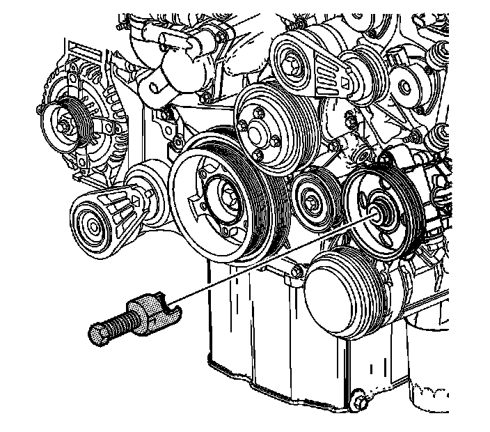

5. Power Steering Pump Removal
Power Steering Pump Removal
Tools Required
J 25034-C Pulley Remover

1. If necessary, using the J 25034-C , remove the power steering pump pulley in order to access the power steering pump mounting bolts.

2. Remove the power steering pump front mounting bolt.

3. Remove the power steering pump side mounting bolt.
4. Remove the power steering pump.